Tine piano · Settled · Picture 0

Identical to the bit: at Picture 0 there is no push to stop, so both players play the one file. Heading: 60 Settled (late 0.0030).
Rendered by render.py beside this page, from the core as it stands on the branch; the numbers are results.json's.
Today a rack module's switch takes its Mix to nought (the Plane: its shaping and the turn to rest), and the Picture amount's fixed pushes are added on top of the knob: Motion onto the delay (0.5 of the amount), Memory onto the Plane's twist and the phaser (0.3 each), and onto the Phase and Glow onto the fold, which are no rack module's and are left alone here. A push makes its stage run, so a delay, phaser or Plane switched off is brought back in from nought by the picture.
Off means off is a render's question only (["offmeansoff", true] in
core/tests/tools/render_cpp.cpp; no setup field, nothing on the face): while a module is
switched off, the Picture's push onto it is ignored and its stage does not run. Off is told as the
switch leaves it: the delay or the phaser at a Mix of nought, the Plane with all its shaping at rest and
the screen unturned. What that costs: a Mix turned to nought by hand or by a host knob is “off” too,
since the switch keeps no state of its own; to make it the instrument's, the switch would have to become
a field, with a migration.
Every pair is the same performance from the core's offline renderer: a chord held six seconds (C3 G3 C4 E4; in a split C2 G2 under E4 G4), then a phrase of eighths at 120, with a bass under it in a split. Every bank preset under Settled and Breathing, at its own Picture amount, with the delay, the phaser and the Plane as it ships them, which is off in all nine; and Harmonic tone again at Amount 100. The files are 22.05 kHz 16-bit stereo. The picture under each is the 64 by 64 grid Scan reads, at the end of the held chord, both drawn to the brighter of the two.
The line under each pair: how far apart the two are in level and in spectrum (honestytest's fifth-octave band shares, window against window, a mean over the part: 0.02 is about what a Breathing preset moves in a quarter second); the most the picture pushed each stage today; and the heading each way, by honestytest's measure ported to the core's render (each preset's own probe held ten seconds: Settled is early at least 0.008, late at most 0.015 and half of early; Breathing late at least 0.02). Today's renders all measure under their own headings, which is the check on the port. The mono fold-down is what the pair loses summed to one channel: about −3 dB is two channels in quadrature, as the figure's circle is, and cancellation would read far lower; none is under −6 dB. The difference as a level (the two subtracted) is in results.json, but read it with care: past 0 dB it says the two have drifted apart in phase, which a delay's repeats do, more than how different they sound.
Do not make off mean off on its own. On the four Settled presets it changes nothing at all - they are at Picture nought, so there is no push to stop, and the two renders are the same to the bit. On all six Breathing renders it changes the sound plainly: 0.04 to 0.25 apart in spectrum, about as much as the presets move in a second, and most of it the delay, which the picture pushes to 0.5 at full Amount and is the larger part of what Breathing means. Slow pad stops measuring as Breathing at all (late 0.016 against the floor of 0.02; it fails Settled too), so the change would take a preset out of its heading, and the bank would have to be voiced again around it - a delay switched on at a low Mix in each Breathing preset, so the picture had something to push. If the owner hears the switched-off pairs as right, that is the cost, and the switch must become a field first. If not, the honest fix is in the words: a module's line on the rack says “Off - the Picture brings it in” while the Amount is pushing it, rather than “Off”.
Identical to the bit: at Picture 0 there is no push to stop, so both players play the one file. Heading: 60 Settled (late 0.0030).
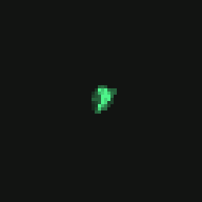

Identical to the bit: at Picture 0 there is no push to stop, so both players play the one file. Heading: 60 Settled (late 0.0036).

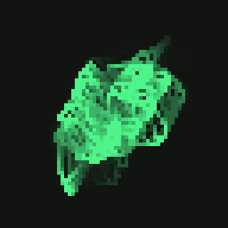
Identical to the bit: at Picture 0 there is no push to stop, so both players play the one file. Heading: 60 Settled (late 0.0028).
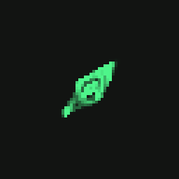

Identical to the bit: at Picture 0 there is no push to stop, so both players play the one file. Heading: 36 Settled (late 0.0067); 67 Settled (late 0.0008).
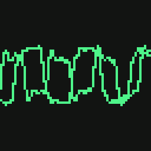
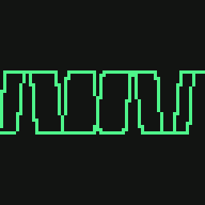
Held: level 0.0 dB, spectrum 0.153 apart. Phrase: level −0.1 dB, spectrum 0.224 apart. Pushed today, at most: delay 0.48, twist 0.10, phaser 0.10 (off: 0.00, 0.00, 0.00). Heading today: 60 Breathing (late 0.1471). Off: 60 Breathing (late 0.1821). Mono fold-down −3.7 / −3.7 dB.
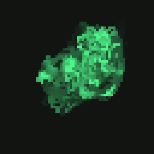
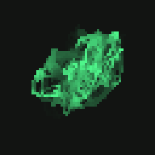
Held: level −0.6 dB, spectrum 0.253 apart. Phrase: level −1.0 dB, spectrum 0.194 apart. Pushed today, at most: delay 0.50, twist 0.11, phaser 0.11 (off: 0.00, 0.00, 0.00). Heading today: 60 Breathing (late 0.0296). Off: 60 neither (late 0.0156). Mono fold-down −1.9 / −2.2 dB.
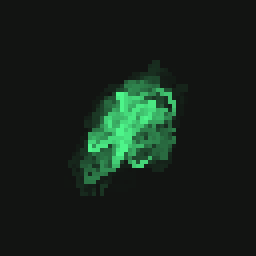
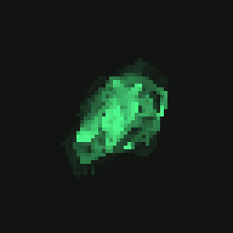
Held: level 0.4 dB, spectrum 0.126 apart. Phrase: level −0.0 dB, spectrum 0.043 apart. Pushed today, at most: delay 0.14, twist 0.05, phaser 0.05 (off: 0.00, 0.00, 0.00). Heading today: 48+55 Breathing (late 0.1250). Off: 48+55 Breathing (late 0.1012). Mono fold-down −3.2 / −3.1 dB.
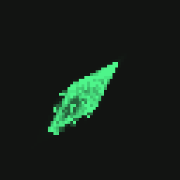
Held: level −0.1 dB, spectrum 0.049 apart. Phrase: level −0.1 dB, spectrum 0.132 apart. Pushed today, at most: delay 0.10, twist 0.08, phaser 0.08 (off: 0.00, 0.00, 0.00). Heading today: 36 Breathing (late 0.0295); 67 Breathing (late 0.2071). Off: 36 Breathing (late 0.0233); 67 Breathing (late 0.0502). Mono fold-down −2.8 / −3.0 dB.
Held: level −0.1 dB, spectrum 0.125 apart. Phrase: level −0.1 dB, spectrum 0.250 apart. Pushed today, at most: delay 0.14, twist 0.10, phaser 0.10 (off: 0.00, 0.00, 0.00). Heading today: 48+67 Breathing (late 0.1275). Off: 48+67 Breathing (late 0.1351). Mono fold-down −3.6 / −3.5 dB.
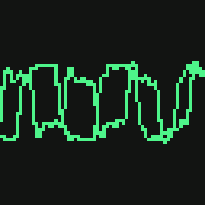
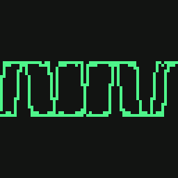
Held: level 0.1 dB, spectrum 0.156 apart. Phrase: level −0.1 dB, spectrum 0.233 apart. Pushed today, at most: delay 0.50, twist 0.10, phaser 0.10 (off: 0.00, 0.00, 0.00). Heading today: 60 Breathing (late 0.1747). Off: 60 Breathing (late 0.2242). Mono fold-down −3.7 / −3.7 dB.